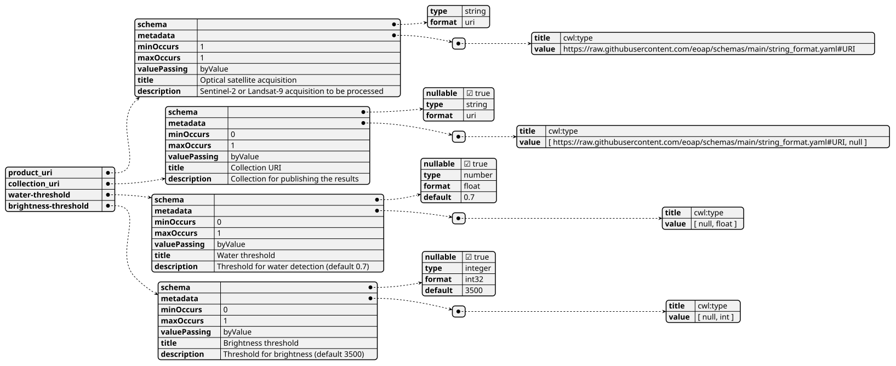
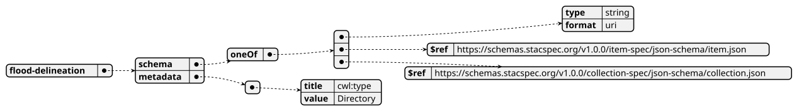
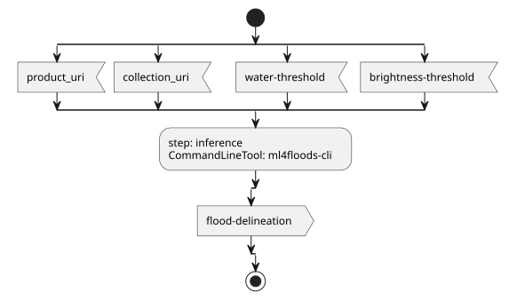
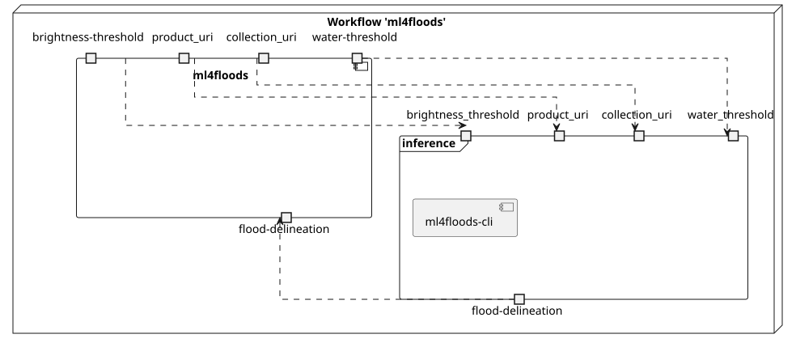
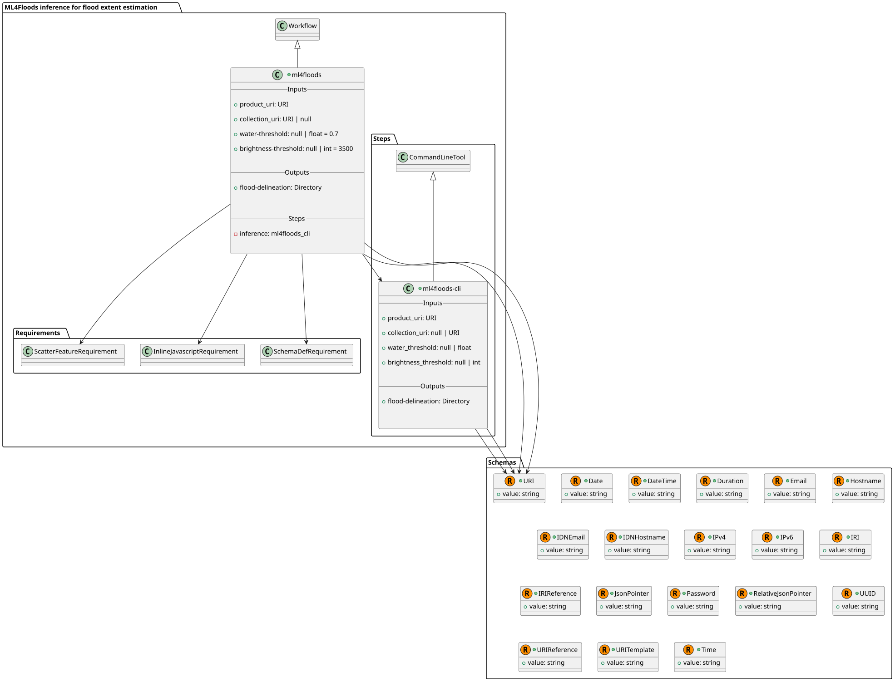
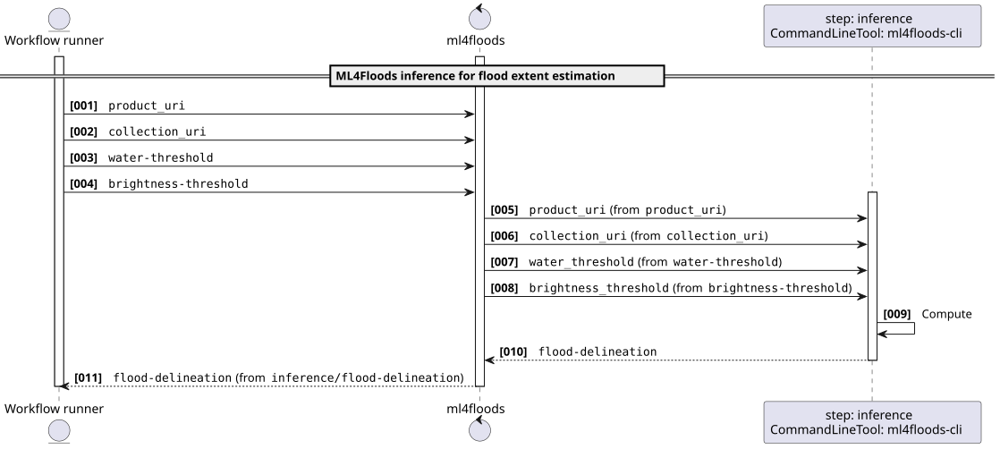
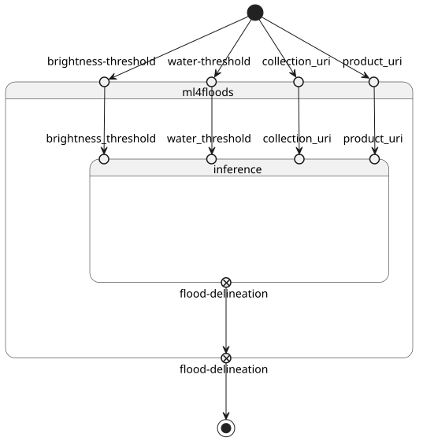

ML4Floods inference for flood extent estimation using pre-trained model on Sentinel-2 or Landsat-9 data v0.3.5
ML4Floods is an end-to-end ML pipeline for flood extent estimation using optical satellite data from Sentinel-2 or Landsat-8/9 acquisition
This software is licensed under the terms of the Creative Commons Attribution 4.0 International license - SPDX short identifier: CC-BY-4.0
2025-10-29 - 2026-04-01T15:55:56.263 Copyright Terradue Srl - > https://ror.org/0069cx113
Project Team
Authors
| Name | Organization | Role | Identifier | |
|---|---|---|---|---|
| Brito, Fabrice | fabrice.brito@terradue.com | Terradue | Project Manager | https://orcid.org/0009-0000-1342-9736 |
| Re, Alice | alice.re@terradue.com | Terradue | Researcher | https://orcid.org/0000-0001-7068-5533 |
| Tripodi, Simone | simone.tripodi@terradue.com | Terradue | Project Leader | https://orcid.org/0009-0006-2063-618X |
Contributors
| Name | Organization | Role | Identifier | |
|---|---|---|---|---|
| Vaccari, Simone | simone.vaccari@terradue.com | Terradue | Researcher | https://orcid.org/0000-0002-2757-4165 |
User Manual
User Manual can be found on https://eoap.github.io/app-ml4floods/.
Runtime environment
Supported Operating Systems
- Linux
- MacOS X
Requirements
Software Source code
- Browsable version of the source repository;
- Continuous integration system used by the project;
- Issues, bugs, and feature requests should be submitted to the following issue management system for this project
ml4floods
CWL Class
Requirements
Inputs
| Id | Type | Label | Doc |
|---|---|---|---|
product_uri |
URI:
|
Optical satellite acquisition | Sentinel-2 or Landsat-9 acquisition to be processed |
collection_uri |
One of: | Collection URI | Collection for publishing the results |
water-threshold |
One of: | Water threshold | Threshold for water detection (default 0.7) |
brightness-threshold |
One of: | Brightness threshold | Threshold for brightness (default 3500) |
Steps
| Id | Runs | Label | Doc |
|---|---|---|---|
| inference | #ml4floods-cli |
None | None |
Outputs
| Id | Type | Label | Doc |
|---|---|---|---|
flood-delineation |
Directory | None | None |
OGC API - Processes
When ml4floods Workflow is exposed through OGC API - Processes - Part 1: Core, inputs and outputs fields below represent the interface of the getProcessDescription API.
Inputs

Outputs

UML Diagrams
Activity diagram
Learn more about the Activity diagram below.

Component diagram
Learn more about the Component diagram below.

Class diagram
Learn more about the Class diagram below.

Sequence diagram
Learn more about the Sequence diagram below.

State diagram
Learn more about the State diagram below.

Run in step
inference
ml4floods-cli
CWL Class
Inputs
| Id | Option | Type |
|---|---|---|
product_uri |
--product-uri |
URI:
|
collection_uri |
--collection_uri |
One of: |
water_threshold |
--water-threshold |
One of: |
brightness_threshold |
--brightness-threshold |
One of: |
Execution usage example:
ml4floods-cli <ARGUMENT_DYNAMICALLY_SET> \
--product-uri <PRODUCT_URI> \
(--collection_uri <COLLECTION_URI>) \
(--water-threshold <WATER_THRESHOLD>) \
(--brightness-threshold <BRIGHTNESS_THRESHOLD>)